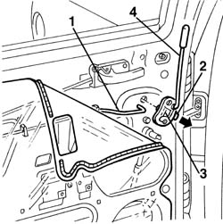
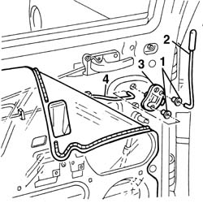

7010C68 rear door catch return - r r
- Path
- Procedures > 70 FITTINGS > 7010 PASSENGER COMPARTMENT REAR SIDE DOORS > 7010C rear lock controls > 7010C68 rear door catch return - r r
- Kind
- repair procedure (removal / refitting; the operation number is the code)
- Applies to
- all engines; all production periods
- Interactive page
- https://sloeber94.github.io/elrnDB-a156/en/#/3238659
Applies to: all engines; all production periods
 Removing
Removing
 Refitting
Refitting7010A04 rear side door water guard protection - r r or arrange with door panel removed
1. Disconnect the rod from the idler.
2. Pull the retaining lever in the direction of the arrow and rotate it through 90°.
3. Remove the idler from its housing.
4. Disconnect the rod with the knob from the idler.

Applies to: all engines; all production periods
Refitting
RemovingCheck that the control mechanism is undamaged.
1. Replace the rod retaining bushes.
2. Connect the rod with the knob to the idler.
3. Fit the control mechanism in its seating and secure it with the retaining lever.
4. Connect the linkage to the control mechanism.

Applies to: all engines; all production periods
7010A04 rear side door water guard protection - r r or arrange with door panel removed
Check that the linkage and door lock/unlock are working.